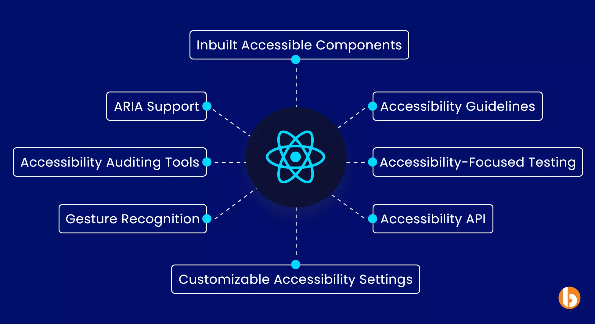

Best Practices for React Development
Best Practices
Best practices for React development can significantly enhance the maintainability, performance, and overall quality of your applications.
1. Component Structure and Organization:
-
• Single Responsibility: Keep components focused on a single responsibility or functionality to enhance reusability and maintainability.
-
• Container and Presentational Components: Use a separation of container components (handling logic, state, and data fetching) and presentational components (focused on rendering UI) to promote a clean and organized codebase.
2. State Management:
-
• Use State Wisely: Lift state up to the nearest common ancestor for shared data and use local component state for component-specific data.
-
• Avoid Excessive Use of State: If a piece of data doesn't affect the UI or isn't needed for rendering consider avoiding state and manage it at a higher level.
3. Code Splitting:
-
• Dynamic Imports: Use dynamic imports and React's lazy loading for code splitting, allowing you to load only the necessary components when needed, improving initial load times.
4. CSS-in-JS and Styling:
-
• Scoped Styles: Use CSS-in-JS libraries or CSS modules to scope styles to components, avoiding global style conflicts.
-
•Avoid Inline Styles: Minimize the use of inline styles for better maintainability and separation of concerns
5. Testing:
-
• Unit Testing: Write unit tests for components using testing libraries like Jest and React Testing Library.
-
• Integration Testing: Perform integration tests to ensure the proper collaboration between components.

6. Accessibility:
-
• Semantic HTML: Use semantic HTML elements for better accessibility and search engine optimization.
-
• ARIA Roles: Implement ARIA roles and attributes to enhance the accessibility of your components.

7. Documentation:
-
• Document Code: Use comments and documentation to explain complex logic or components.
-
• Storybook: Consider using tools like Storybook to build and document UI components in isolation.
Overview
By adhering to these best practices, you can create more maintainable, performant, and scalable React applications.
< Prev Next >